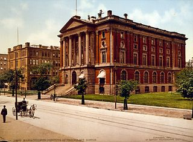
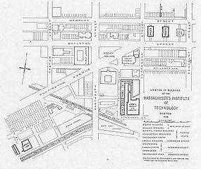

Massachusetts Institute of Technology
The Massachusetts Institute of Technology (MIT) is a private land-grant research university in Cambridge, Massachusetts. Established in 1861, MIT has since played a key role in the development of modern technology and science, ranking among the top academic institutions in the world.
Founded in response to the increasing industrialization of the United States, MIT adopted a European polytechnic university model and stressed laboratory instruction in applied science and engineering. The institute has an urban campus that extends more than a mile (1.6 km) alongside the Charles River, and encompasses a number of major off-campus facilities such as the MIT Lincoln Laboratory, the Bates Center, and the Haystack Observatory, as well as affiliated laboratories such as the Broad and Whitehead Institutes.
Some Facts
- Motto Mens et Manus (Latin)
- Motto in English "Mind and Hand"
- Type Private land-grant research university
- Established April 10, 1861; 161 years ago
Contents
-
History
- Foundation and vision
- Early developments
- Notable alumni
History
Foundation and vision
In 1859, a proposal was submitted to the Massachusetts General Court to use newly filled lands in Back Bay, Boston for a "Conservatory of Art and Science", but the proposal failed. A charter for the incorporation of the Massachusetts Institute of Technology, proposed by William Barton Rogers, was signed by John Albion Andrew, the governor of Massachusetts, on April 10, 1861.
Early developments
Two days after MIT was chartered, the first battle of the Civil War broke out. After a long delay through the war years, MIT's first classes were held in the Mercantile Building in Boston in 1865. The new institute was founded as part of the Morrill Land-Grant Colleges Act to fund institutions "to promote the liberal and practical education of the industrial classes" and was a land-grant school. In 1863 under the same act, the Commonwealth of Massachusetts founded the Massachusetts Agricultural College, which developed as the University of Massachusetts Amherst. In 1866, the proceeds from land sales went toward new buildings in the Back Bay.
MIT was informally called "Boston Tech". The institute adopted the European polytechnic university model and emphasized laboratory instruction from an early date. Despite chronic financial problems, the institute saw growth in the last two decades of the 19th century under President Francis Amasa Walker. Programs in electrical, chemical, marine, and sanitary engineering were introduced, new buildings were built, and the size of the student body increased to more than one thousand.
Notable alumni
Many of MIT's over 120,000 alumni have achieved considerable success in scientific research, public service, education, and business. As of October 2020, 41 MIT alumni have won Nobel Prizes, 48 have been selected as Rhodes Scholars, 61 have been selected as Marshall Scholars, and 3 have been selected as Mitchell Scholars.
")
Apollo 11 astronaut Buzz Aldrin, ScD 1963 (MIT Department of Aeronautics and Astronautics)

"Boston" guitarist Tom Scholz, SB 1969, SM 1970 (MIT Department of Mechanical Engineering)

CEO of General Motors Alfred P. Sloan, SB 1895 (MIT Department of Electrical Engineering and Computer Science)
For a more comprehensive list, see List of Massachusetts Institute of Technology alumni and List of Nobel laureates affiliated with Massachusetts Institute of Technology.